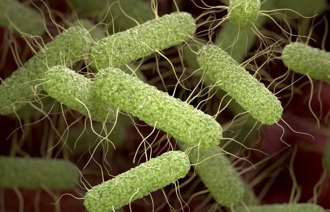

Bacteria in the swiss alps
Salmonella —Salmonella are hardy bacteria that can persist in soil, water, and on surfaces touched by people or wildlife. In mountain areas, contamination usually comes from animal droppings or poorly handled food at campsites and huts. Most infections happen when someone eats or drinks something contaminated with a small amount of fecal material, for example unfiltered stream water, undercooked eggs or meat
Microbes are one of the most important pieces in nutrient cycles; without them, plants and animals would lose critical support.